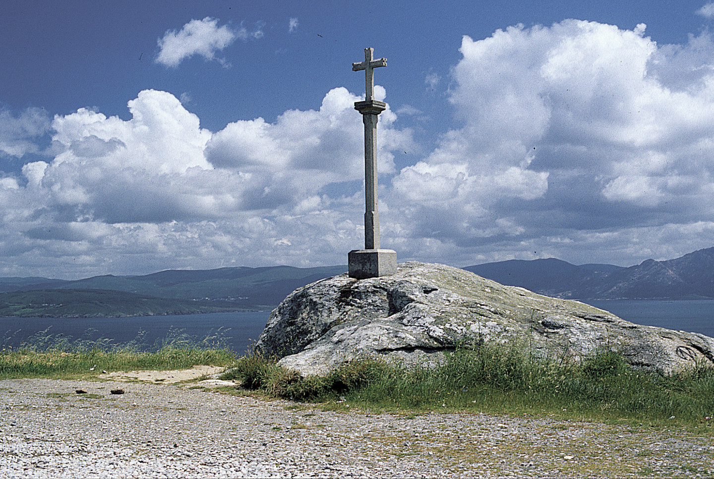
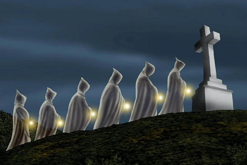

Conceptos
Ter o aire


Ficha rápida do concepto
- Nome: Ter o aire
- Outros nomes: ar, sombra ou mal cativo
- Tipo: crenza popular galega
- Afecta principalmente a: nenos, persoas vulnerables ou persoas enfermas
- Relación simbólica: mundo dos vivos e mundo dos mortos
O concepto en si
Xa sei que vos falei do aire na entrada da Coca. Ao principio pensei que sería unha desas crenzas curiosas que atopas mentres buscas información, apuntas nalgún sitio e esqueces aos dous días. Pero quedei pensando nela e obsesioneime co tema ata tal punto que empecei a recoñecerme nalgunhas das cousas que lía. E, por se fose pouco, un día saíume en Spotify a canción Quitar o aire, de Caamaño & Ameixeiras. Non sei se a coñecedes. Foi unha casualidade bastante rara, pero agora non podo escoitala sen pensar no tema.
Na tradición galega dise que unha persoa pode ter o aire. Tamén lle chaman ar, sombra ou mal cativo. Non é exactamente unha enfermidade, senón unha maneira de explicar que algo cambiou dentro de ti. É como se algo alleo entrase no corpo e quedase aí. Falaban de cansazo, de debilidade, de ir perdendo as forzas pouco a pouco, de mala sorte… Basicamente, todo che sae mal. E pensei: "E se eu tamén teño o aire?"
Sei que soa absurdo. Pero cando unha crenza popular describe cousas que levas tempo sentindo, custa convencerse de que só é unha coincidencia.
Segundo a tradición, o aire podía adquirirse de moitas formas. Existía o aire dos animais, o das mulleres parideiras ou menstruadas e incluso o dos mortos. O que máis medo daba era o aire de morto. Dicían que podía pegarse durante un velorio ou un enterro e que afectaba sobre todo ás persoas máis vulnerables. Para protexerse facían todo tipo de cousas: pechaban as fiestras cando pasaba un enterro, afumábanse con loureiro ou empregaban as herbas de San Xoán.
Non sei se algún deses rituais funcionaba. O que si entendo é a necesidade de buscar unha explicación cando notas que algo non vai ben e non sabes como chamarlle. Quizais por iso esta crenza quedou comigo.
Bibliografía
Alive, G., & Alive, G. (2024, 8 novembro). O aire e como quitar o aire. Galicia Alive. Ver fonte
Bóveda, L. D. (2021). Afumarse del aire dos mortos. Revista es más de tu ciudad. Ver fonte
Rabell Padró, J. (2019). Ritual de trencar el “cop d’aire” o l’airada. Miscellanea Aqualatensia, 18, 121-144. Ver fonte